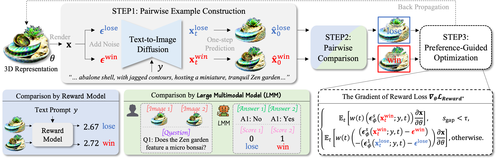

DreamDPO: Aligning Text-to-3D Generation with Human Preferences
via Direct Preference Optimization
Preprint 2025
Zhenglin Zhou1, Xiaobo Xia2†, Fan Ma3, Hehe Fan1, Yi Yang1†, Tat-Seng Chua2
1 Zhejiang University, 2 National University of Singapore, 3 Yale University
Video
Method Overview
Framework of DraemDPO. DreamDPO first constructs pairwise examples, then compares their alignment with human preferences using reward or large multimodal models, and lastly optimizes the 3D presentation with a preference-driven loss function. The loss function pulls the win example closer and pushes the lose example away.
DreamDPO with Reward Model
DreamDPO with Large Multi-modal Model
Citation
@article{zhou2025dreamdpo,
title={DreamDPO: Aligning Text-to-3D Generation with Human Preferences via Direct Preference Optimization},
author={Zhou, Zhenglin and Xia, Xiaobo and Ma, Fan and Fan, Hehe and Yang, Yi and Chua, Tat-Seng},
journal={arXiv},
year={2025}
}